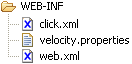

The Click configuration files include:
|  |
<web-app>
<servlet>
<servlet-name>ClickServlet</servlet-name>
<servlet-class>net.sf.click.ClickServlet</servlet-class>
<load-on-startup>0</load-on-startup>
</servlet>
<servlet-mapping>
<servlet-name>ClickServlet</servlet-name>
<url-pattern>*.htm</url-pattern>
</servlet-mapping>
</web-app>
<click-app>
<pages package="com.mycorp.page"/>
</click-app>
An example of an advanced config file is:
<click-app charset="UTF-8" locale="de"> <pages package="com.mycorp.page"> <page path="index.htm" classname="com.mycorp.page.Home"/> </pages> <format classname="com.mycorp.util.Format"/> <mode value="profile"/> <file-item-factory classname="com.mycorp.util.AppFileItemFactory"/> </click-app>
<!ELEMENT click-app (pages?, headers?, format?, mode?, controls?, file-upload-service?, log-service?, template-service?)> <!ATTLIST click-app charset CDATA #IMPLIED> <!ATTLIST click-app locale CDATA #IMPLIED>The charset attribute defines the character encoding set for:
<click-app charset="UTF-8" locale="de"> .. </click-app>
<!ELEMENT pages (page*)> <!ATTLIST pages package CDATA #IMPLIED> <!ATTLIST pages automapping (true|false) "true"> <!ATTLIST pages autobinding (true|false) "true">The pages element can specify a default package name which is prepended to the classname of any pages defined. The pages element also defines the automapping attribute which is discussed in the Page Automapping topic.
<!ELEMENT page (header*)> <!ATTLIST page path CDATA #REQUIRED> <!ATTLIST page classname CDATA #REQUIRED>Each page path must be unique, as the Click application maps HTTP requests to the page paths. The Click application will create a new Page instance for the given request using the configured page classname. All pages must subclass Page and provide a public no arguments constructor, so they can be instantiated. Pages can also define header values which are discussed in the next topic. When the Click application starts up it will check all the page definitions. If there is a critical configuration error the ClickSerlvet will log an ERROR message and throw an UnavailableException. If this occurs the click application will be permanently unavailable until the error is fixed and the web app is restarted.
=> com.mycorp.page.Home => com.mycorp.page.Search => com.mycorp.page.contacts.Contacts => com.mycorp.page.security.Login => com.mycorp.page.security.Logout => com.mycorp.page.security.ChangePasswordThis could be configured manually by setting the automapping attribute to "false" and using the package prefix, for example:
<click-app> <pages package="com.mycorp.page" automapping="false"> <page path="" classname="Home"/> <page path="" classname="Search"/> <page path="" classname="contacts.Contacts"/> <page path="" classname="security.Login"/> <page path="" classname="security.Logout"/> <page path="" classname="security.ChangePassword"/> </pages> </click-app>Using automapping you only need to define the Home page which doesn't automatically map to index.html.
<click-app> <pages package="com.mycorp.page" automapping="true"> <page path="" classname="Home"/> </pages> </click-app>Note automapping is true by default, so it could be omitted from the configuration file. The page template name to classname convention is:
change-password.htm => ChangePassword change_password.htm => ChangePassword changePassword.htm => ChangePassword ChangePassword.htm => ChangePasswordWhen automapping pages, if a class cannot be found Click will attempt to add the 'Page' suffix to the classname if not already present and map this. For example:
customer.htm => CustomerPage change-password.htm => ChangePasswordPage
<!ELEMENT excludes (#PCDATA)> <!ATTLIST excludes pattern CDATA #REQUIRED>For example if our application uses the TinyMCE JavaScript library we could configure our pages automapping to exclude all .htm files under the /tiny_mce directory.
<click-app>
<pages package="com.mycorp.page">
<excludes pattern="/tiny_mce/*"/>
</pages>
</click-app>
The excludes pattern can specify multiple directories or files using a comma
separated notation. For example:
<click-app>
<pages package="com.mycorp.page">
<excludes pattern="/dhtml/*, /tiny_mce/*, banner.htm, about.htm"/>
</pages>
</click-app>
HTM files excluded from Page automapping are handled by an internal Page class
with caching headers enabled.
public class EmployeePage extends Page {
public Form employeeForm = new Form();
public Table myTable = new Table();
}
In the example above the employeeForm and myTable
controls were not added to the page. Also note that Form and Table does not have their names defined.
When autobinding is enabled, ClickServlet will create a new Page and add the public
controls to the page. In the example above the employeeForm and
myTable will be added to the page, as if you had invoked,
addControl(employeeForm) and addControl(myTable).
The control's names were not defined so ClickServlet will set their names to the value
of their field/variable name. In this case the Form name will be set to employeeForm
while the Table name will set to myTable.
The above example is thus a shorthand way of writing the following:
public class EmployeePage extends Page {
public Form employeeForm = new Form();
public Table myTable = new Table();
public void onInit() {
employeeForm.setName("employeeForm");
addControl(employeeForm);
myTable.setName("myTable");
addControl(myTable);
}
}
You can turn this behaviour off by setting the autobinding attribute to false, for example:
<click-app> <pages package="com.mycorp.page" autobinding="false"/> </click-app>
<!ELEMENT headers (header*)>The header element defines header name and value pairs which are applied to the HttpServletResponse.
<!ELEMENT header (#PCDATA)> <!ATTLIST header name CDATA #REQUIRED> <!ATTLIST header value CDATA #REQUIRED> <!ATTLIST header type (String|Integer|Date) "String">Page headers are set after the Page has been constructed and before onInit() is called. Pages can then modify their headers property using the setHeader() method.
<click-app>
<pages>
..
</pages>
<headers>
<header name="Pragma" value="no-cache"/>
<header name="Cache-Control"
value="no-store, no-cache, must-revalidate, post-check=0, pre-check=0"/>
<header name="Expires" value="1" type="Date"/>
</headers>
</click-app>
Alternatively you can define your headers individually in pages or for all application
pages by setting header values. For example to switch off
caching in the login page, note the value for a Date type should be a long number value:
<page path="login.htm" classname="com.mycorp.page.Login"/> <header name="Pragma" value="no-cache"/> <header name="Expires" value="1" type="Date"/> </page>If you wanted to enable caching for a particular page you could set the following page cache control header. This will mark the page as cachable for a period of 1 hour after which it should be reloaded.
<page path="home.htm" classname="com.mycorp.page.Home"/> <header name="Cache-Control" value="max-age=3600, public, must-revalidate"/> </page>To apply header values globally define header values in the headers element. For example:
<click-app>
<pages>
..
</pages>
<headers>
<header name="Pragma" value="no-cache"/>
<header name="Cache-Control"
value="no-store, no-cache, must-revalidate, post-check=0, pre-check=0"/>
<header name="Expires" value="1" type="Date"/>
</headers>
</click-app>
<!ELEMENT format (#PCDATA)>
<ATTLIST format classname CDATA #FIXED "net.sf.click.util.Format">
By default all Click pages are configured with a
net.sf.click.util.Format
object. The format object is made available in the Velocity page templates using the name
$format.
To specify a custom format class configure a format element in the click-app
descriptor. For example:
<click-app> .. <format classname="com.mycorp.util.CustomFormat"/> </click-app>
<!ELEMENT mode (#PCDATA)>
<ATTLIST mode value (production|profile|development|debug|trace) "development">
By default Click applications run in development mode, which switches off page
template caching, and the logging level is set to INFO.
To change the default application mode configure a mode element in the click-app
descriptor. For example to specify production mode you would add the
following mode element:
<click-app> .. <mode value="production"> </click-app>The application mode configuration can be overridden by setting the system property "click.mode". This can be use in the scenario of debugging a problem on a production system, where you change the mode to trace by setting the following system property and restarting the application.
-Dclick.mode=traceThe Click Application modes and their settings for Page auto loading, template caching and logging levels are:
| Application mode | Page auto loading | Template caching | Click logging level | Velocity logging level |
|---|---|---|---|---|
| production | No | Yes | WARN | ERROR |
| profile | No | Yes | INFO | ERROR |
| development | Yes | No | INFO | ERROR |
| debug | Yes | No | DEBUG | ERROR |
| trace | Yes | No | TRACE | WARN |
[Click] [debug] GET http://localhost:8080/quickstart/home.htm [Click] [trace] invoked: HomePage.<<init>> [Click] [trace] invoked: HomePage.onSecurityCheck() : true [Click] [trace] invoked: HomePage.onInit() [Click] [trace] invoked: HomePage.onGet() [Click] [trace] invoked: HomePage.onRender() [Click] [info ] renderTemplate: /home.htm - 6 ms [Click] [trace] invoked: HomePage.onDestroy() [Click] [info ] handleRequest: /home.htm - 24 msAny unhandled Throwable errors are logged by the ClickServlet. Note that Click Extras also provide log adaptors for Log4J and the JDK Logging API. When an application is not in production mode the error page displays detailed debugging information. When the application mode is production no debug information is displayed to prevent sensitive information being revealed. This behaviour can be changed by modifying the deployed click/error.htm page template.
<!ELEMENT controls (control*)>The control registers Control classes which will have their onDeploy() method invoked when the click application starts.
<!ELEMENT control (#PCDATA)> <!ATTLIST control classname CDATA #REQUIRED>For example to have a CustomField control deploy its resources on application startup, you would add the following elements to your click.xml file:
<click-app>
..
<controls>
<control classname="com.mycorp.control.CustomField"/>
</controls>
</click-app>